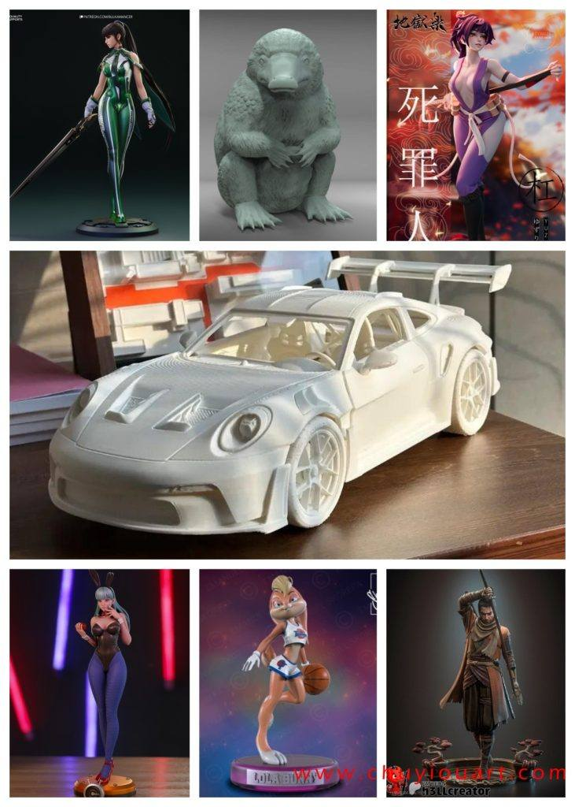
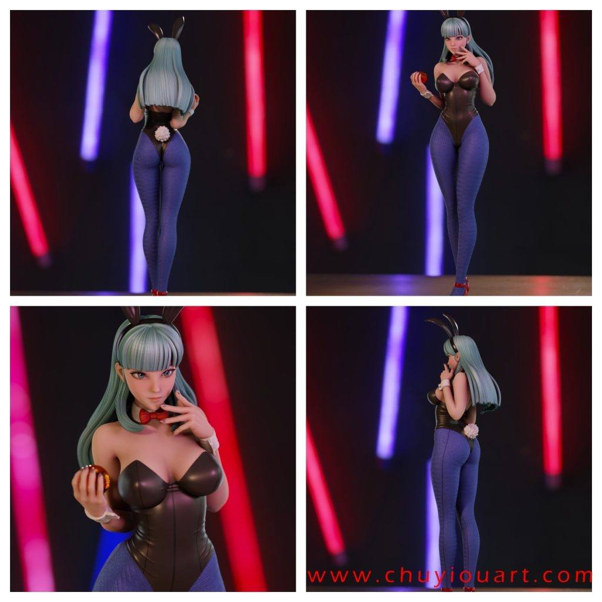
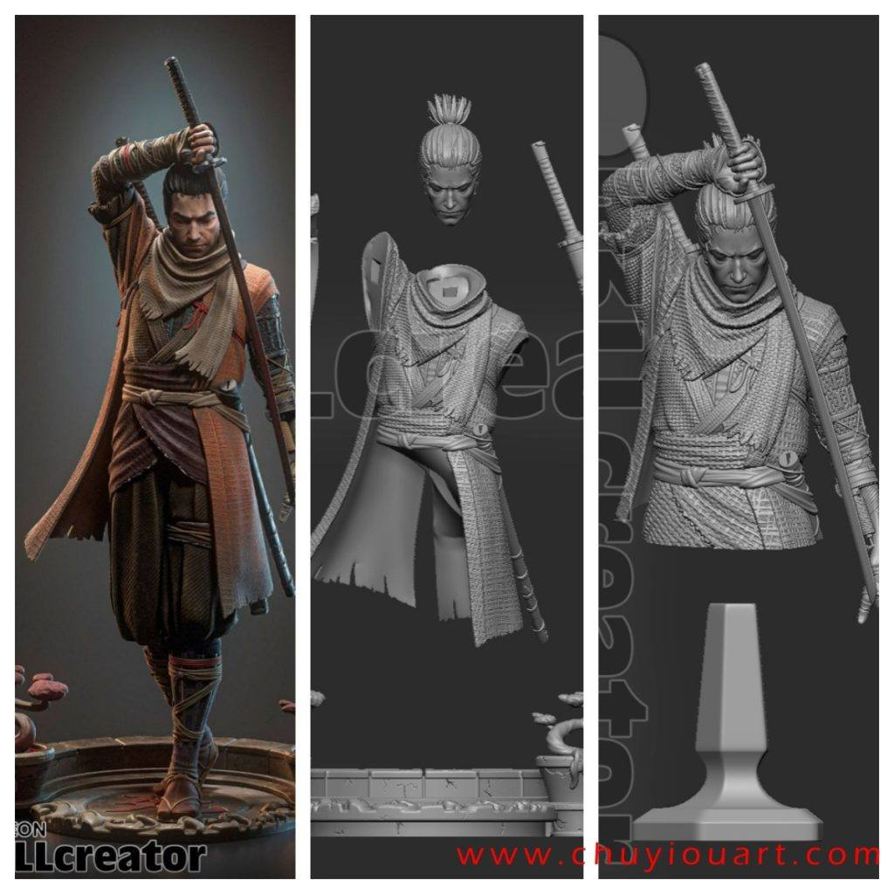
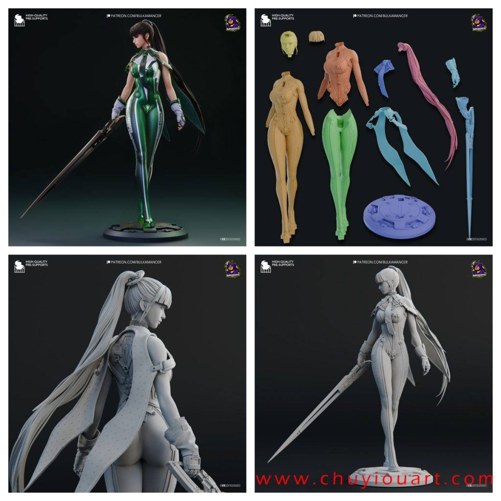
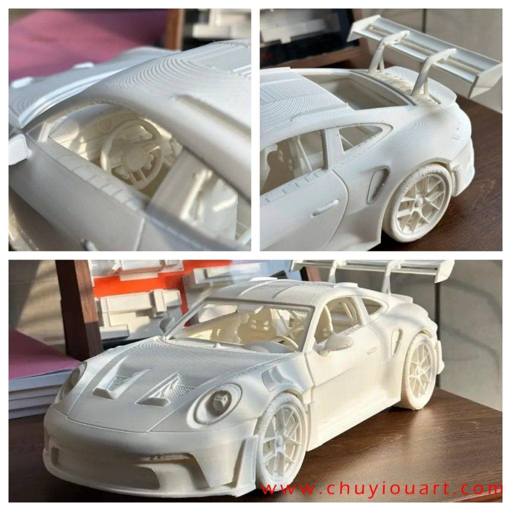

模型分享
2025年02月09日STl图纸文件分享

今天给大家分享七组风格多样的模型，首先是一组精度不错的兔女郎模型，细节表现力很好；然后是还原度和分件都很出色的只狼模型；还有帅气的星刃伊芙、个性鲜明的地狱乐、经典角色劳拉兔、展现速度与激情的GTR模型，以及可爱淘气的神奇动物嗅嗅。






链接: https://pan.baidu.com/s/1_70r8OsZnvrsug9IIiVuPQ 提取码: z1ik
以上内容仅供个人使用（非商用）
ONLY for PERSONAL (NON-COMMERCIAL) use.
加群获得更多免费模型！